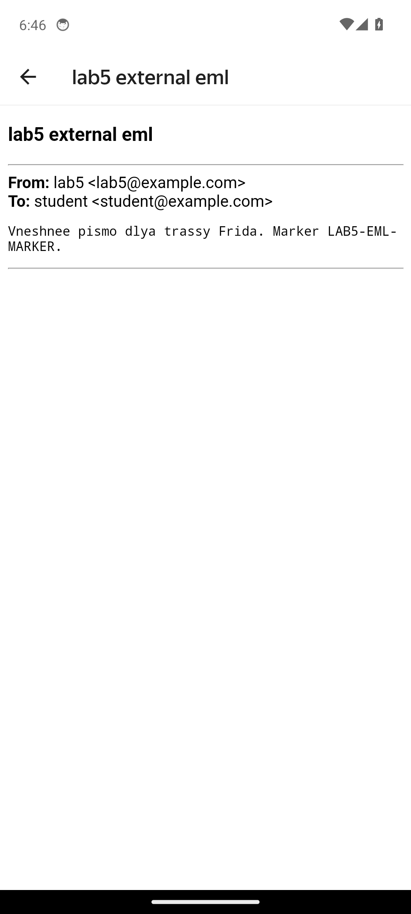
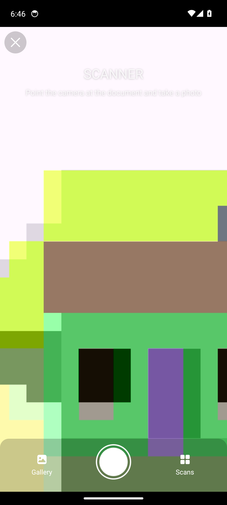

Выбери узел
Каждый узел — кусок работы, который уже лежит в lab5/results/. Повторно считать его не нужно.
Браузер не сохранил отметки. В этой вкладке они живут, пока её не закрыть.
К содержаниюСтраница для устного ответа. Рядом лежит Лаб5_самоучитель_и_защита.md, его эта страница не заменяет и не правит. Отчёт сдаётся как report.md и mbks_lab_5.docx.
Вариант 11. Белый ящик — учебное приложение mfva (в таблице задания опечатка «mvfa»), пакет com.appknox.mfva. Чёрный ящик — Yandex Mail 8.81.2, пакет ru.yandex.mail, versionCode 105397. В mfva разобраны DES/ECB с ключом в исходнике, MD5, пароли и токен по HTTP, резервная копия, WebView с JavaScript и два реально открытых компонента. Необъявленное CustomPermission остальные как раз закрывает. Почта принимает чужое письмо через экспортированную EmlActivity. На эмуляторе API 34 письмо открылось, Frida на pid 9066 записала openInputStream. Native-методов 339, письмо до них не доходит. Сканер загрузил libcamera360-arcadia.so из APK, вызов JNI на кадре не пойман. FlowDroid записал 18 путей и оборвался по памяти. Trueseeing: 8068 срабатываний, 37 групп, уровня High нет. APKHunt шёл 22 минуты и напечатал ноль экспортированных компонентов. Это ошибка сводки. MobSF и SEBASTiAN без Docker не запускались.
Вариант 11. Белый ящик — mfva, чёрный ящик — Yandex Mail 8.81.2. В mfva: DES/ECB с ключом Gangnam!, MD5, который печатается как toString массива, пароли user1, pass1, pass0 и токен по HTTP, allowBackup и WebView с JavaScript. CustomPermission не объявлен, поэтому компоненты с именами Unprotected снаружи закрыты. Открыты сервис, чей onBind бросает исключение, и приёмник без разрешения. Почта принимает письмо через экспортированную EmlActivity. Frida на pid 9066 записала openInputStream на этот файл. 339 native-методов выписаны скриптом на androguard. Письмо в нативный код не уходит. Сканер в том же процессе загрузил libcamera360-arcadia.so из APK, вызов JNI на кадре трасса не поймала. FlowDroid дал 18 путей и оборвался по памяти, письма среди них нет. Trueseeing — 8068 срабатываний, 37 групп, High нет. APKHunt напечатал ноль экспортированных компонентов, это ошибка инструмента. MobSF и SEBASTiAN на машине без Docker не запускались.
Полные прогоны FlowDroid, Trueseeing и APKHunt на защите не повторяются. Второй эмулятор не поднимается, пока жив первый.
Нажми узел. Справа — цифра, которую можно сказать, и файл, который открыть.
Каждый узел — кусок работы, который уже лежит в lab5/results/. Повторно считать его не нужно.
Короткий смысл на карточке. Длинный разбор открывается внутри. Блок «На защите» можно читать почти дословно.
Белый ящик — исходники есть, ошибка видна в тексте. Чёрный ящик — только APK. Статический анализатор даёт гипотезу. Открытое письмо и строка в трассе — наблюдение.
SAST здесь: FlowDroid, Trueseeing, APKHunt и разбор androguard. Они почту не запускают. DAST в этой работе: эмулятор и Frida. Приложение открывает письмо, скрипт записывает вызов. Доказательства, на которые можно опираться: фрагмент mfva, скриншот письма, openInputStream в трассе, библиотека в карте модулей.
Белый ящик — чтение исходников mfva по разделам MASVS. Чёрный ящик — APK почты: декомпиляция, манифест, эмулятор и Frida. Статический анализатор даёт гипотезу. Открытое письмо и строка openInputStream — уже наблюдение.
Три документа об одном. MASVS говорит, что должно быть верно. MSTG говорит, какими тестами это проверять. Kotlin-SCP — те же ошибки для Kotlin.
Номера MSTG в отчёт не подставлялись там, где по коду нельзя честно сослаться на идентификатор. mfva написан на Java, отдельных файлов Kotlin нет, правила перенесены по смыслу.
MASVS — требования, MSTG — как проверять, Kotlin-SCP — те же классы ошибок. Разбор идёт по восьми категориям MASVS v1, не по распечатке всех номеров тестов.
Чужое приложение входит через activity, service, receiver и provider. exported="true" пускает снаружи. Разрешение на компоненте пускает только того, у кого оно есть.
Если тега <permission> с таким именем нет, обычное приложение себе это разрешение не получит. Компонент выглядит открытым, а снаружи закрыт. Подпись signature пускает только приложение с тем же ключом: так закрыта часть Passport в почте, com.yandex.permission.READ_CREDENTIALS.
У почты targetSdk 33, у mfva targetSdk 30. С targetSdk 31 компонент с intent-filter обязан объявить exported явно. Корень adb shell am start — не чужое приложение: так запущен неэкспортированный сканер. Стороннее приложение так сделать не может.
Source — место, куда попадают чужие данные. Sink — место, где они становятся опасными. Задание велит считать native-вызов стоком. Таких определений 339.
Письмо: ACTION_VIEW на файл → EmlActivity.onCreate → openInputStream → разбор в Java → текст в WebView. До native эта цепочка не доходит.
Сканер: DocScannerCameraActivity при пустом bundle → loadLibrary("camera360-arcadia") → библиотека видна из base.apk. До вызова конкретной JNI-функции трасса не идёт.
Файл results/native-sinks.txt написан в формате стока FlowDroid. В SourcesAndSinks.txt, которым кормили прогон, эти 339 строк не входили.
Источник письма — Intent.getData и openInputStream. Сток этого пути — разбор и WebView. 339 native-методов я тоже считаю стоками, письмо до них не доходит. Сканер грузит camera360, это отдельный сценарий.
JADX поднимает из DEX Java-подобный текст. Это не исходник автора. Подсчёты отчёта сняты androguard, не глазами по XML.
APKHunt сам вызвал JADX и закончил строкой finished with errors, count: 267. Классы EmlActivity, сканер, офлайн-календарь и константа SpeechKit открываются из APK скриптом lab5/scripts/jadx-mail.sh. Выгруженное дерево lab5/sources/yandex-mail удалено. В lab5/sources/ остался mfva, каталог в git не входит. Дерево прогона APKHunt лежит в results/apkhunt/ и в git тоже не входит. Имя для APKHunt без пробелов и точек: yandex-mail-8-81-2.apk, SHA-256 тот же.
Скрипт внутри живого процесса. Клиент и сервер оба 17.4.0, сервер android-x86_64. Итоговая трасса — attach по pid, имя процесса Yandex Mail.
Spawn через frida -f до Java.perform не доходит. Сессия живёт, пока открыт stdin: её держали sleep 40 | stdbuf -oL -eL frida. Клиент 16.7.19 из venv анализа к серверу 17.4.0 не подходит. env.sh этот venv в PATH не кладёт.
Подмена System.loadLibrary роняет WebView письма. Хук на все Activity.onCreate роняет тот же экран. Хук android_dlopen_ext роняет процесс. Подмена методов EyeNative тоже. В trace.js этих хуков нет: только две активности и openInputStream.
Клиент и сервер оба 17.4.0. Подключался attach по pid, потому что имя процесса — Yandex Mail, а spawn до Java не доходит. Широкие хуки роняют WebView, поэтому в трассе только EmlActivity, сканер и openInputStream.
Флаг ACC_NATIVE значит: байткода нет, реализация в библиотеке. Версию пишут только если она есть в строке или в имени файла.
| Префикс | Методов | Библиотека |
|---|---|---|
ru.yandex.speechkit | 110 | SpeechKit 4.15.7 |
org.webrtc | 89 | jingle / WebRTC |
ru.yandex.dict | 78 | camera360-arcadia |
org.sqlite.core | 38 | sqlitejdbc, файла нет |
com.yandex.metrica | 16 | AppMetrica, файлов нет |
com.yandex.eye | 8 | libeye.so |
110+89+78+38+16+8 = 339. OpenCV виден по путям, номера нет. В звонковой библиотеке BoringSSL, не OpenSSL. extractNativeLibs=false: библиотека может отображаться как base.apk!/lib/x86_64/.... libpng во всех четырёх файлах: 0.
Статический taint по APK. Штатный список источников и стоков, 460 строк. Свои 339 native-стоков туда не добавлялись. Решатель: 18 путей из 36 источников, 86 секунд, пик 8512 МБ.
В XML стоит TerminationState="DataFlowOutOfMemory". Отчёт цитирует консоль: 86 секунд и 8512 МБ. Файл на диске — повторный прогон: 340 секунд и 8379 МБ, путей по-прежнему 18. Таймаут 480 секунд не сработал. Среди путей нет EmlActivity, openInputStream, camera360, SpeechKit и WebRTC. Отсутствие пути в оборванном прогоне не доказывает, что пути нет. Для письма доказательство другое: в onCreate нет loadLibrary, и трасса после чтения библиотеки APK в процесс не ввела.
FlowDroid напечатал 18 путей и оборвался по памяти. Письма среди них нет. Что письмо не вызывает native, я показываю по коду EmlActivity и по трассе, а не по оборванному прогону.
Обвязка над четырьмя сканерами. В задании назван download_script.py. В репозитории набора этого файла нет. Загрузка начинается с sudo apt-get.
| Средство | В работе |
|---|---|
| Trueseeing 2.2.11 | прогнан отдельно |
| APKHunt | прогнан отдельно |
| MobSF | нет Docker |
| SEBASTiAN | нет Docker |
Локальный lab5/owapp/DownloadScript.sh только делает жёсткую ссылку APK. RunningScript.sh не запускался.
Сначала реши сам. Разбор откроется после ответа.
Trueseeing нашёл 8068 уязвимостей в почте.
Ловушка. 8068 — число срабатываний шаблона. В JSON они сжаты в 37 групп: Info 26, Medium 6, Low 5. Уровня High нет. 1451 у APKHunt — вхождения записи в журнал, не 1451 дыра.
APKHunt верно посчитал ноль экспортированных компонентов.
Ловушка. Сводка напечатала 0 по активностям, провайдерам, приёмникам и сервисам. В манифесте того же прогона android:exported="true" встречается 43 раза. Поверхность атаки берётся из androguard: 20 активностей с входом из 108, сервисы 12 из 32, приёмники 29 из 35, провайдеры 3 из 20.
Почта разрешает ясный текст: в XML стоит cleartextTrafficPermitted="true".
Ловушка. Файл res/xml/network_security_config.xml есть, но тег application на него не ссылается, своего usesCleartextTraffic нет, targetSdk 33. С API 28 ясный текст по умолчанию запрещён. Trueseeing и APKHunt ставят находку по факту файла. Рабочей политикой он не является.
UnprotectedReceiver в mfva открыт снаружи: это видно по имени класса.
Ловушка. Имя описывает задумку автора. На компоненте висит com.appknox.mfva.CustomPermission, а тега permission с таким именем нет. Чужое приложение разрешение не получит. Снаружи открыты ExportedService и ExportedReceiver: разрешения на них нет.
Исходники: lab5/sources/mfva. Сборка compileSdk 30, minSdk 25, targetSdk 30, versionName 1.0, versionCode 6. Зависимости: OkHttp 3.8.0, Jedis 2.9.0, AppCompat 1.0.0. ProGuard выключен. README прямо говорит, что ошибки вставлены для сканера Appknox. На эмулятор mfva не ставился: заданию хватает исходников.
Точка входа — MainActivity. Рядом лежат экспортированные компоненты, не связанные с главным экраном. Модели угроз в репозитории нет.
Исправление: оставить учебный экран с пояснением каждой ошибки и убрать боевые имена хостов, если приложение ставится вне стенда.
allowBackup="true". Кнопка пишет системные свойства в SharedPreferences pref режимом 0, это MODE_PRIVATE. FLAG_SECURE нет. Log.d("YOLO", quote) пишет цитату в logcat.
Исправление: allowBackup=false, не писать свойства окружения, убрать отладочный лог, на экране с токеном ставить FLAG_SECURE.
MD5 считается, а на экран попадает hash.toString() у массива байт: это идентификатор объекта, не дайджест. Шифрование просит DES/ECB и ключ из исходника. Провайдера Bouncy Castle в build.gradle нет, вызов на устройстве падает. Параметры от этого не становятся нормальными. MD5 без провайдера BC выполняется.
SecretKey keyspec = new SecretKeySpec("Gangnam!".getBytes(), "DES");
Cipher c = Cipher.getInstance("DES/ECB/ZeroBytePadding", "BC");Исправление: AES-GCM, ключ в Android Keystore, для целостности SHA-256.
ApiRequestsActivity шлёт user1 / pass1 на http://vapi.appknox.io/tokens. Пароль нового пользователя — pass0. Токен виден в TextView и уходит заголовком X-Auth-Token по HTTP. Своего network security config нет. На API 28+ ясный текст по умолчанию запрещён, запрос с современного устройства, скорее всего, не уйдёт. Исходник требование всё равно нарушает.
Исправление: пароль из ввода, только HTTPS, токен не печатать целиком.
WebView включает JavaScript и открывает http://example.com. Своего WebViewClient нет.
| Компонент | Снаружи |
|---|---|
| ExportedActivity | закрыт необъявленным permission. Внутри Jedis на localhost без пароля и тот же DES |
| UnprotectedService | закрыт тем же permission |
| UnprotectedReceiver | имя обманчиво, закрыт |
| ExportedService | разрешения нет. onBind бросает UnsupportedOperationException |
| ExportedReceiver | разрешения нет. Явный broadcast дойдёт, URI пишется в лог и в Toast. Системный boot не придёт: нет RECEIVE_BOOT_COMPLETED |
| StubProvider | закрыт. Authority com.example.android.datasync.provider не совпадает с пакетом. Есть grant-uri-permission на path="/" |
В манифесте запрошены ACCESS_FINE_LOCATION и BLUETOOTH, в Java они не используются. В отчёте этой фразы нет: если спросят про полноту, скажи её. Исправление: exported=false или настоящее signature-permission, JavaScript выключен, onBind возвращает null.
Исключения показываются через Snackbar с фонового потока. Проверок отладчика, root и подписи нет. Для MASVS L1 устойчивость не обязательна, добавлять её в учебное приложение с намеренными ошибками не нужно.
Самые прямые ошибки mfva: DES/ECB с ключом Gangnam!, MD5 через toString массива, пароли и токен по HTTP, allowBackup и WebView с JavaScript. Unprotected-компоненты закрыты необъявленным CustomPermission. Открыты сервис с исключением в onBind и приёмник без разрешения.
ru.yandex.mail, 8.81.2, versionCode 105397, targetSdk 33, allowBackup false.EmlActivity без permission, тип message/rfc822.openInputStream на lab5-external.eml. Маркер на скриншоте.libcamera360-arcadia.so из base.apk. watched=0 значит, что вход в JNI не записан. Загрузку библиотеки это не отменяет.DataFlowOutOfMemory. Письма среди них нет, и это не доказательство полноты.| Поле | Значение |
|---|---|
| Файл | lab5/work/apk/Yandex Mail_8.81.2_APKPure.apk |
| Размер | 136353707 байт |
| SHA-256 | 6fb616ce30b13dc911a9dcdd2ddfeb3450a4eb6cbf49a99733c5aefa8680463c |
| minSdk / targetSdk | 26 / 33 |
| Классы / методы | 59178 / 260516, пять dex |
| Сборка 8.78.1 | не ставилась |
allowBackup false, extractNativeLibs false, debuggable не задан. Разрешений 63. Приложение com.yandex.mail.MailApplication.
Сводка androguard: активности 108, с входом 20. Сервисы 32 / 12. Приёмники 35 / 29. Провайдеры 20, экспортированы 3. Псевдоним входа ru.yandex.mail.ui.LoginActivity целится в StartWizardActivity. Запуск псевдонима через am start -n отвечает does not exist.
EmlActivity экспортирована, permission нет, фильтр VIEW на message/rfc822, application/eml и путь .eml. Это прямой вход файла, без аккаунта и без сервера. Три экспортированных провайдера: AuthSdk, SSO и preload AppMetrica. У SSO методы после проверки на null бросают исключение, утечки строк через query нет. Тестовые активности Compose и AndroidX с exported=true — мусор сборки.
Сканер документов в список экспортированных не входит.
Локальный файл, 240 байт, тема lab5 external eml, маркер LAB5-EML-MARKER. Лежит в /data/data/ru.yandex.mail/files/ от имени uid приложения u0_a192, режим 640. Общий sdcard не использовался: на API 34 чужой file:// из общего хранилища активность часто не отдаёт. Для чужого приложения рабочий путь — content://. Это воспроизведение ACTION_VIEW, а не модель «чужое приложение записало файл в приватный каталог».


activity.onCreate class=com.yandex.mail.eml.EmlActivity
intent action=android.intent.action.VIEW type=message/rfc822
data=file:///data/data/ru.yandex.mail/files/lab5-external.eml
openInputStream uri=file:///data/data/ru.yandex.mail/files/lab5-external.eml
activity.onCreate class=...DocScannerCameraActivity
bundleNull=true
snapshot reason=after DocScannerCameraActivity.onCreate watched=0Второй attach, modules-pid9066.log: libcamera360-arcadia.so по пути base.apk!/lib/x86_64/..., всего модулей 330. В коде сканера при пустом bundle первая содержательная строка — System.loadLibrary("camera360-arcadia"), вызов стоит до super.onCreate.
watched=0 не значит, что библиотека не загрузилась. Карта долгоживущего агента её не показала, следующий attach показал. Входа в JNI нет. libeye, WebRTC и SpeechKit в этом pid не появлялись: для них нужен экран эффектов, звонок или голос после входа. Вход в аккаунт не делался. Строка Fatal Python error в конце лога — шум закрытия клиента, почта на этой трассе не умерла.
Смотрелся ABI x86_64. Строгих loadLibrary восемь. Число 43 в сыром json шире: туда попали любые invoke со словом load.
| Библиотека | Что сказать |
|---|---|
| libcamera360-arcadia.so | NDK r22, экспорт Java_ 235, JNI_OnLoad нет. OpenCV без номера. Грузится из сканера |
| libeye.so | NDK r21e, Java_ 8. Класс EyeNative, метод processBufferBug. В сеансе не загружалась |
| libjingle_peerconnection_so.so | WebRTC, BoringSSL, libyuv, libvpx, Opus. Номер релиза BoringSSL не назван. Без звонка не загружалась |
| libYandexSpeechKitJni.4.15.7.so | Версия из имени файла. Ключ — константа SPEECHKIT_API_KEY в com.yandex.mail.l, значение в разделе 13 отчёта. Запрос к API не отправлялся |
libpng: 0 совпадений. Ключ на защите не зачитывать.
Стоки, которые стоит помнить: loadLibrary 8, Runtime.exec 5, WebView.loadUrl 36, addJavascriptInterface 25. Это число invoke, не число дыр. Строки Runtime.exec фиксированы: опрос ro.build.type и /etc/os-release, подстановки Intent нет. OfflineCalendarActivity включает JavaScript и универсальный доступ с file URL. CertificatePinner встречается 9 раз: это класс OkHttp, не доказательство pinning почты.
FlowDroid 2.15.1, куча 8 ГБ, повторно не запускать. 18 путей — аналитика, курсоры, кэш Lottie, удаление файла в SharingFileProvider и выбор компонента Passport. Письма среди них нет.
Trueseeing 2.2.11: found 8068 issues (66.37 sec.). Группы: Info 26, Medium 6, Low 5. Из Medium помнить: XOR, признак подмены проверки TLS, cleartext-файл, jQuery, WebView, статические ключи. High нет. Команда версии без терминала пишет requires a tty, на скан это не влияет.
APKHunt: старт 18:48:53, финиш 19:11:08, 22m14.841748933s. Журналы 455 файлов / 1451 вхождение, ссылки 250 / 473. allowBackup="true" и debuggable="true" не найдены. Четыре строки exported = 0 в защиту не брать. JADX внутри: 267 ошибок. В strings.xml есть firebase_database_url на https://yandex-mail.firebaseio.com, правила базы инструмент не проверял.
Семь правок почты из раздела 17 отчёта: убрать ключ SpeechKit и отозвать его, выключить file URL в WebView календаря, сузить экспорт EmlActivity, убрать тестовые активности из release, закрыть SsoContentProvider, не оставлять неподключённый cleartext-XML, разобрать processBufferBug в libeye.
Быстрый показ читает готовые файлы. Каталог команд — корень репозитория после source lab5/work/env.sh. Интерпретатор lab5/work/venvs/analysis в PATH не добавлять: там Frida 16.7.19.
cd /home/drenk83/Projects/gitrepo/mbks_labs
source lab5/work/env.sh
sha256sum "lab5/work/apk/Yandex Mail_8.81.2_APKPure.apk"
sed -n '108,114p' lab5/sources/mfva/app/src/main/java/com/appknox/mfva/MainActivity.java
sed -n '1,4p' lab5/results/natives.txt
grep openInputStream lab5/results/frida/trace.log
grep camera360 lab5/results/frida/modules-pid9066.log
grep -o 'TerminationState="[^"]*"' lab5/results/flowdroid/yandex-mail.xml
grep -c '<Result>' lab5/results/flowdroid/yandex-mail.xml6fb616ce30b13dc911a9dcdd2ddfeb3450a4eb6cbf49a99733c5aefa8680463cGangnam! и DES/ECB/ZeroBytePaddingnative methods: 339, дальше classes 59178 и methods 260516lab5-external.emlbase.apk!/lib/x86_64/libcamera360-arcadia.soTerminationState="DataFlowOutOfMemory" и число Result, равное 18Письмо открыто и дочитано, это видно на скриншоте и в трассе. Native-методов 339, к письму они не подключены. Сканер загрузил библиотеку с OpenCV. FlowDroid дал 18 путей и оборвался по памяти. Trueseeing и APKHunt отработали, два средства набора на этой машине без Docker не запускаются.
Сначала adb devices и проверка, что qemu не запущен. Пустой список — тогда один экземпляр: -gpu guest -memory 2048 -cores 2 -no-snapshot -feature -Vulkan. На -gpu swiftshader_indirect этот образ уже падал. Образ пишет Falling back to 'lavapipe' mode, загрузка того прогона 14495 мс, API 34. После показа qemu остановить. FlowDroid, Trueseeing и APKHunt заново не запускать: показать XML, JSON и txt.
| Симптом | Что сказать и сделать |
|---|---|
| java: command not found | Не сделан source lab5/work/env.sh. JDK — Temurin 21 из лабы 4. |
| frida --version печатает 16.7.19 | В PATH попал venv анализа. Новый терминал и снова source env.sh. |
| Хеш не совпал | Открыт другой APK, например 8.78.1. Брать файл из lab5/work/apk. |
| adb devices пуст | Для быстрого показа эмулятор не нужен. |
| qemu падает в gfxstream | Снова стоит swiftshader_indirect. Флаг: -gpu guest -feature -Vulkan. |
| Frida сразу пишет Thank you for using Frida | Закрылся stdin. Держать сессию через sleep и stdbuf. |
| frida -f молчит | У этой почты spawn не доходит до Java. Только attach по pid. |
| Процесс не находится по пакету | Имя в frida-ps — Yandex Mail, не ru.yandex.mail. |
| EmlActivity падает на WebView | Включён широкий хук. Итоговый trace.js его не ставит. |
| LoginActivity does not exist | Это псевдоним. Цель — StartWizardActivity. Для письма нужен EmlActivity. |
| FlowDroid снова ест память | Так и было, 8512 МБ. Не перезапускать, показать XML. |
| trueseeing version requires a tty | На скан не влияет. Бинарь вызывать полным путём venv. |
| APKHunt пишет exported 0 | Ошибка сводки. Показывать results/manifest.txt. |
Напиши ответ своими словами, потом открой эталон. Отметки остаются в браузере.
Помеченных «плаваю» пока нет. Ответь на карточку и нажми «Плаваю».
Вариант 11. Белый ящик — mfva, пакет com.appknox.mfva. В таблице написано mvfa, ссылка ведёт на репозиторий mfva. Чёрный ящик — Yandex Mail 8.81.2, пакет ru.yandex.mail, versionCode 105397.
В столбце варианта указана сборка 8.81.2 из AndroidApps4Research. Хеш файла в работе совпадает с этой сборкой. 8.78.1 не ставилась.
MASVS — список требований. MSTG — как эти требования проверять. В отчёте восемь категорий MASVS v1. Kotlin-SCP разобран по смыслу: mfva на Java, файлов Kotlin нет.
DES/ECB с ключом Gangnam! — заменить на AES-GCM, ключ положить в Android Keystore. Пароли user1/pass1/pass0 и токен по HTTP — пароль из ввода, только HTTPS, токен не печатать. ExportedReceiver без разрешения — exported=false или signature-permission. Рядом WebView с JavaScript на http://example.com.
На нём висит android:permission="com.appknox.mfva.CustomPermission", а тега permission с таким именем нет. Чужое приложение несуществующее разрешение не получит. Имя класса описывает задумку автора, не фактический доступ.
ExportedService: разрешения нет, onBind бросает UnsupportedOperationException. Это отказ при bind. ExportedReceiver: разрешения нет, явный broadcast доходит, приёмник пишет URI в лог и в Toast. Системный BOOT_COMPLETED приложение не получит: разрешения RECEIVE_BOOT_COMPLETED нет.
Cipher.getInstance просит провайдер BC. В build.gradle его нет, исключение перехватывается. На устройстве шифрование падает. В коде остаются DES, ECB, ZeroBytePadding и ключ в исходнике. MD5 без BC выполняется.
Source — чтение данных, на которые влияет внешний субъект. Для письма это Intent.getData и openInputStream. Sink — опасная операция. Задание относит к стокам и native-вызовы, их 339. Путь письма заканчивается в Java и в WebView.
EmlActivity экспортирована, permission нет, фильтр принимает VIEW на message/rfc822, application/eml и путь .eml. Это прямой вход файла. Сценарий воспроизводится без аккаунта и без сервера.
На API 34 чужой file:// из общего хранилища просмотрщик часто не отдаёт. Файл положен в /data/data/ru.yandex.mail/files/ от имени uid приложения, режим 640. Для чужого приложения рабочий путь — content://.
Pid 9066. EmlActivity.onCreate с action VIEW, типом message/rfc822 и data на lab5-external.eml. Следом openInputStream на тот же URI. Потом DocScannerCameraActivity.onCreate с bundleNull=true. Снимки библиотек в этой сессии: watched=0.
Второй attach к тому же pid, файл modules-pid9066.log: libcamera360-arcadia.so из base.apk. Это согласуется с extractNativeLibs=false. В коде сканера при пустом bundle первая содержательная строка — System.loadLibrary("camera360-arcadia").
Хук android_dlopen_ext ронял процесс. Подмена System.loadLibrary роняла WebView письма. Подмена методов EyeNative убивала процесс. В итоговой трассе этих хуков нет. Факт загрузки есть, вызова функции на кадре нет.
Нет. 18 элементов Result и 36 элементов Source, решатель 86 секунд, пик 8512 МБ. В корне XML стоит DataFlowOutOfMemory, полное время 210 секунд. Эти 18 путей — аналитика, курсоры, кэш и выбор компонента. Для письма доказательство — код EmlActivity и трасса. В отчёте фразы про обрыв нет, на защите её говоришь сам.
Скрипт выписал их в native-sinks.txt. В SourcesAndSinks.txt, который передан флагом -s, эти 339 строк не добавлялись. Поэтому FlowDroid на достижимость native не отвечает. Её разбирал вручную.
lab5/scripts/audit_apk.py на androguard 4.1.4. Обходит DEX, берёт методы с флагом ACC_NATIVE, печатает класс, имя и JNI-дескриптор. Итог: results/natives.txt, 339 определений. JEB не использовался, задание разрешает androguard.
OpenCV внутри libcamera360-arcadia.so, номера в строках нет. В libjingle — WebRTC, BoringSSL, libyuv, libvpx, Opus и соседние кодеки, номер релиза BoringSSL не назван. SpeechKit 4.15.7 — из имени файла. libpng: 0. Называть это OpenSSL конкретной версии нельзя.
Константа SPEECHKIT_API_KEY в классе com.yandex.mail.l передаётся в native_init. Значение приведено в разделе 13 отчёта, здесь его нет специально. Запрос к API не отправлялся. Исправление: убрать ключ из клиента, выдавать короткоживущий токен, уже утекший ключ отозвать.
Так напечатана его сводка. В манифесте того же прогона android:exported="true" есть, таких атрибутов 43. Для цифр поверхности атаки используется androguard: 20 активностей с входом, 12 сервисов, 29 приёмников, 3 провайдера.
В network_security_config.xml есть cleartextTrafficPermitted="true". Тег application на него не ссылается, своего usesCleartextTraffic нет, targetSdk 33. С API 28 ясный текст по умолчанию запрещён. Рабочей политикой файл не является. Исправление: удалить его или подключить явно и убрать cleartext.
Оба в наборе OWApp запускаются через Docker. Сокета Docker нет, sudo нет, DownloadScript.sh набора начинается с apt-get. Прогнаны Trueseeing и APKHunt. Файла download_script.py в репозитории набора нет. RunningScript.sh не запускался.
Семь пунктов раздела 17. Убрать ключ SpeechKit из клиента. Выключить file URL в WebView офлайн-календаря. Сузить экспорт EmlActivity. Убрать тестовые активности Compose и AndroidX из release. Закрыть SsoContentProvider. Не оставлять неподключённый cleartext-XML. Разобрать processBufferBug в libeye.
FlowDroid, Trueseeing и APKHunt читают APK и письмо не открывают. Эмулятор и Frida открывают конкретный файл и записывают конкретный вызов. Статика дала 18 путей и тысячи срабатываний. Динамика подтвердила один сценарий: просмотр .eml.
Нет. Это разбор учебной сборки 8.81.2 и учебного mfva. Запросы к API SpeechKit не отправлялись, аккаунт не заводился, эксплуатация не разрабатывалась. Рекомендации в отчёте — про исправление кода.
Вход в JNI на кадре сканера. Полный прогон FlowDroid: обрыв по памяти, native-стоки в него не входили. MobSF и SEBASTiAN. Загрузку libeye, WebRTC и SpeechKit: для них нужен аккаунт, звонок или голосовой ввод. Разбор чёрного ящика по всем номерам тестов MSTG по отдельности не делался: он собран по шагам задания.
Нажми карточку, чтобы перевернуть. Рядом короткий тест с близкими неверными ответами.
Пока ни одного ответа.
339 определений с ACC_NATIVE. 8 — это строгие loadLibrary. 43 — раздутый сырой json. 8068 — срабатывания Trueseeing.
8068 срабатываний сжаты в 37 групп. 1451 — вхождения журнала у APKHunt. 18 — пути FlowDroid.
18 Result и 36 Source. Прогон оборвался по памяти, это не полный перебор.
В сводке 0. Атрибут exported=true в его же манифесте встречается 43 раза. 20 — активности с входом по androguard.
108 всего, 20 с входом. 12 — сервисы с входом. 43 — сырой подсчёт атрибута в манифесте APKHunt.
9066. 105397 — versionCode. 14495 мс — загрузка эмулятора. 8512 — пик памяти FlowDroid.
Ноль по четырём библиотекам x86_64. 4 — число библиотек. 235 — экспорты Java_ у camera360.
17.4.0. 16.7.19 тянет Trueseeing и в трассу не годится. 2.2.11 — Trueseeing. 1.5.6 — JADX.
Отметь фразу, когда проговорил её вслух.
| Слово | Смысл в этой работе |
|---|---|
| Белый ящик | mfva, исходники есть |
| Чёрный ящик | Yandex Mail, только APK |
| MASVS | восемь категорий требований |
| MSTG | тесты к этим категориям |
| exported | компонент можно вызвать снаружи |
| permission | вызов только при наличии разрешения |
| source | чтение внешних данных |
| sink | опасная операция, включая native-вызов |
| ACC_NATIVE | у метода нет байткода, реализация в .so |
| JNI | мост между Java и функцией в библиотеке |
| Frida | скрипт внутри живого процесса |
| attach | подключение к уже запущенному pid |
| FlowDroid | статический taint по APK |
| DataFlowOutOfMemory | анализ остановился, куча кончилась |
| Trueseeing | статический сканер с оценкой CVSS |
| APKHunt | чек-лист MASVS по декомпиляции |
| OWApp | обвязка над четырьмя сканерами |
| Вопрос | Файл |
|---|---|
| Что сдаётся | report.md, mbks_lab_5.docx |
| Как запускалось | Журнал_действий.md |
| DES и WebView mfva | lab5/sources/mfva |
| Манифест почты | results/manifest.txt |
| 339 методов | results/natives.txt |
| Счётчики стоков | results/api-hits.txt |
| OSS | results/oss-summary.txt |
| Трасса письма | results/frida/trace.log |
| Библиотека загружена | results/frida/modules-pid9066.log |
| FlowDroid | results/flowdroid/yandex-mail.xml |
| Trueseeing | results/trueseeing/yandex-mail.json |
| APKHunt | results/apkhunt/…txt |
| Хук итоговой сессии | scripts/trace.js, функция armJava |
grep -o 'TerminationState="[^"]*"' lab5/results/flowdroid/yandex-mail.xml
grep -c '<Result>' lab5/results/flowdroid/yandex-mail.xml
grep 'Total time taken' lab5/results/apkhunt/APKHunt_yandex-mail-8-81-2_2026-10-31_18-48-53.txt
lab5/work/venvs/analysis/bin/trueseeingПовторный androguard пиши в чужой каталог, не в lab5/results:
lab5/work/venvs/analysis/bin/python lab5/scripts/audit_apk.py \
"lab5/work/apk/Yandex Mail_8.81.2_APKPure.apk" \
/tmp/lab5-audit-out